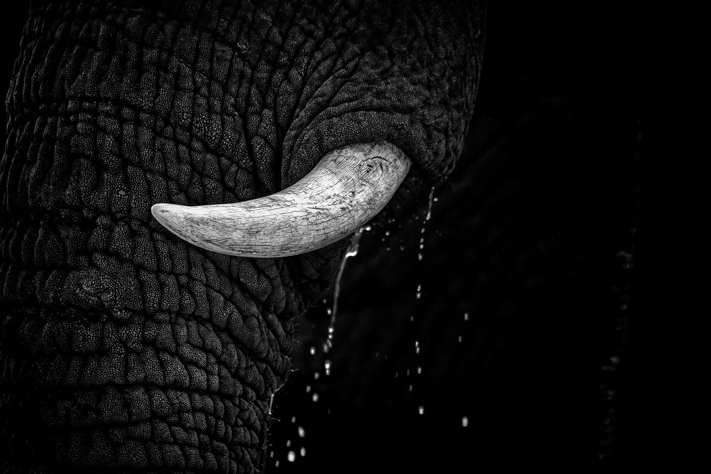
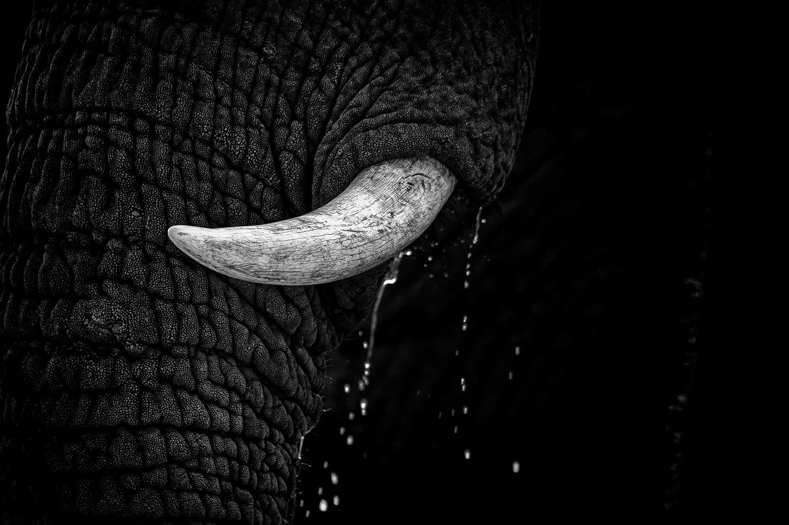

Shannon's Projects
Since 2004, she has worked for clients such as National Geographic, NatGeo Wild and the United Nations as well as various wildlife NGO's and non-profits such as Wild Tomorrow Fund, The Perfect World Foundation and Wildaid.
Red Collective - The Wilds
Overview of
Shannon Wild's Portfolio
“Her ability to capture the animal kingdom with such grace is an inspiration to photographers and non-photographers alike. Her images seem to tame the animal, while simultaneously setting them free.”
- Nikon Australia
 
